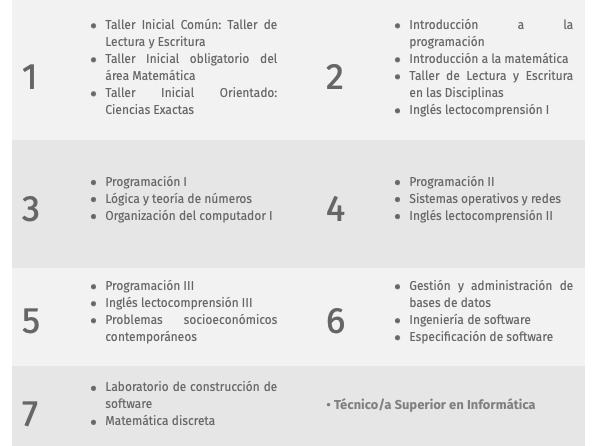
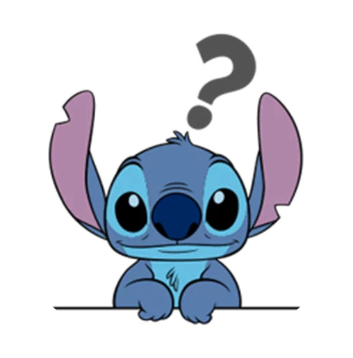

Bases de Datos I
Presentación de la materia
Hernán Rondelli
Hernán Rondelli
Oficiales:
Materias fuertemente recomendadas:

Condiciones de aprobación
Parcial – 2026-05-02
DER. Modelo Relacional. Álgebra Relacional.
Dependencias Funcionales. Formas Normales. SQL.
Recuperatorio – 2026-05-18 (atención: inmediatamente después del parcial)
Entrega trabajo práctico – 2026-06-26
Todos los temas de la materia.
Conjunto de datos relacionados.

Hernán Rondelli